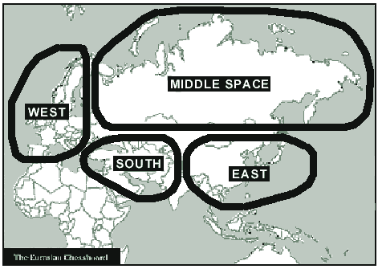
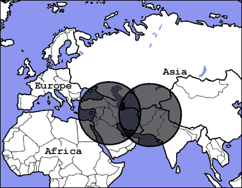

![20120724 - 7-24-2012 The More We Learn - quote from David Rockfeller -_thumb[2]](../assets/images/20120724---7-24-2012-the.jpeg)


⚛ ⚛ ⚛
⚛ ⚛ ⚛ (Current History)
Depleted Uranium:
The Trojan Horse of Nuclear War
LEUREN MORET / World Affairs – The Journal of International Issues 1jul04
[More by Leuren Moret]
Heat not a furnace for your foe so hot that it do singe yourself.
William Shakespeare (1564-1616)
The use of depleted uranium weaponry by the United States, defying all international treaties, will slowly annihilate all species on earth including the human species, and yet this country continues to do so with full knowledge of its destructive potential.
LEUREN MORET
Since 1991, the United States has staged four wars using depleted uranium weaponry, illegal under all international treaties, conventions and agreements, as well as under the US military law. The continued use of this illegal radioactive weaponry, which has already contaminated vast regions with low level radiation and will contaminate other parts of the world over time, is indeed a world affair and an international issue. The deeper purpose is revealed by comparing regions now contaminated with depleted uranium — from Egypt, the Middle East, Central Asia and the northern half of India — to the US geostrategic imperatives described in Zbigniew Brzezinski’s 1997 book The Grand Chessboard.

Fig. 1: Brzezinski’s map of the Eurasian Chessboard
SOUTH REGION: “This huge region, torn by volatile hatreds and surrounded by competing powerful neighbors, is likely to be a major battlefield, both for wars among nation-states and, more likely, for protracted ethnic and religious violence. Whether India acts as a restraint or whether it takes advantage of some opportunity to impose its will on Pakistan will greatly affect the regional scope of the likely conflicts. The internal strains within Turkey and Iran are likely not only to get worse but to greatly reduce the stabilizing role these states are capable of playing within this volcanic region. Such developments will in turn make it more difficult to assimilate the new Central Asian states into the international community, while also adversely affecting the American-dominated security of the Persian Gulf region. In any case, both America and the international community may be faced here with a challenge.
The fact is that the United States and its military partners have staged four nuclear wars, "slipping nukes under the wire" by using dirty bombs and dirty weapons in countries the US needs to control. Depleted uranium aerosols will permanently contaminate vast regions and slowly destroy the genetic future of populations living in those regions, where there are resources which the US must control, in order to establish and maintain American primacy.
Described as the Trojan Horse of nuclear war, depleted uranium is the weapon that keeps killing. The half-life of Uranium-238 is 4.5 billion years, the age of the earth. And, as Uranium-238 decays into daughter radioactive products, in four steps before turning into lead, it continues to release more radiation at each step. There is no way to turn it off, and there is no way to clean it up. It meets the US Government’s own definition of Weapons of Mass Destruction.
After forming microscopic and submicroscopic insoluble Uranium oxide particles on the battlefield, they remain suspended in air and travel around the earth as a radioactive component of atmospheric dust, contaminating the environment, indiscriminately killing, maiming and causing disease in all living things where rain, snow and moisture remove it from the atmosphere. Global radioactive contamination from atmospheric testing was the equivalent of 40,000 Hiroshima bombs, and still contaminates the atmosphere and lower orbital space today. The amount of low level radioactive pollution from depleted uranium released since 1991, is many times more (deposited internally in the body), than was released from atmospheric testing fallout.
A 2003 independent report for the European Parliament by the European Committee on Radiation Risk (ECRR), reports that based on Chernobyl studies, low level radiation risk is 100 to 1000 times greater than the International Committee for Radiation Protection models estimate which are based on the flawed Atomic and Hydrogen Bomb Studies conducted by the US Government. Referring to the extreme killing effects of radiation on biological systems, Dr. Rosalie Bertell, one of the 46 international radiation expert authors of the ECRR report, describes it as:
"The concept of species annihilation means a relatively swift, deliberately induced end to history, culture, science, biological reproduction and memory. It is the ultimate human rejection of the gift of life, an act which requires a new word to describe it: omnicide."
1943 MANHATTAN PROJECT BLUEPRINT FOR DEPLETED URANIUM
In a declassified memo to General Leslie R. Groves, dated October 30, 1943, three of the top physicists in the Manhattan Project, Dr James B Conant, A H Compton, and H C Urey, made their recommendation, as members of the Subcommittee of the S-1 Executive Committee, on the ‘Use of Radioactive Materials as a Military Weapon’:
"As a gas warfare instrument the material would be ground into particles of microscopic size to form dust and smoke and distributed by a ground-fired projectile, land vehicles, or aerial bombs. In this form it would be inhaled by personnel. The amount necessary to cause death to a person inhaling the material is extremely small … There are no known methods of treatment for such a casualty … it will permeate a standard gas mask filter in quantities large enough to be extremely damaging."
As a Terrain Contaminant:
"To be used in this manner, the radioactive materials would be spread on the ground either from the air or from the ground if in enemy controlled territory. In order to deny terrain to either side except at the expense of exposing personnel to harmful radiations … Areas so contaminated by radioactive material would be dangerous until the slow natural decay of the material took place … for average terrain no decontaminating methods are known. No effective protective clothing for personnel seems possible of development. … Reservoirs or wells would be contaminated or food poisoned with an effect similar to that resulting from inhalation of dust or smoke."
Internal Exposure:
"… Particles smaller than 1µ [micron] are more likely to be deposited in the alveoli where they will either remain indefinitely or be absorbed into the lymphatics or blood. … could get into the gastro-intestinal tract from polluted water, or food, or air. … may be absorbed from the lungs or G-I tract into the blood and so distributed throughout the body."
Both the fission products and depleted uranium waste from the Atomic Bomb Project were to be utilised under this plan. The pyrophoric nature of depleted uranium, which causes it to begin to burn at very low temperatures from friction in the gun barrel, made it an ideal radioactive gas weapon then and now. Also it was more available because the amount of depleted uranium produced was much greater than the amount of fission products produced in 1943.
Britain had thoughts of using poisoned gas on Iraq long before 1991:
"I am strongly in favour of using poisoned gas against uncivilized tribes. The moral effect should be good... and it would spread a lively terror..." (Winston Churchill commenting on the British use of poison gas against the Iraqis after the First World War).
GUIDED WEAPONS SYSTEMS
Depleted uranium weapons were first given by the US to Israel for use under US supervision in the 1973 Sinai war against the Arabs. Since then the US has tested, manufactured, and sold depleted uranium weapons systems to 29 countries. An international taboo prevented their use until 1991, when the US broke the taboo and used them for the first time, on the battlefields of Iraq and Kuwait.
The US military admitted using depleted uranium projectiles in tanks and planes, but warheads in missiles and bombs are classified or referred to as a ‘dense’ or ‘mystery metal’. Dai Williams, a researcher at the 2003 World Depleted Uranium Weapons Conference, reported finding 11 US patents for guided weapons systems with the term ‘depleted uranium’ or ‘dense metal’, which from the density can only be depleted uranium or tungsten, in order to fit the dimensions of the warhead.
Figure 2 - Hard target guided weapons in 2002: smart bombs & cruise missiles with "dense metal" warheads (updated September 2002)
Warhead weight
Warhead weights include explosives (~20%) and casing. Dense metal ballast or liners (suspected to be DU) estimated to be 50-75% of warhead weight - necessary to double the density of previous versions. AUP = Advanced penetrators. S/CH = Shaped Charge. BR = BROACH Multiple Warhead System (S/CH+AUP). P = older 'heavy metal' penetrators. © Dai Williams 2002
source: Depleted Uranium weapons in 2001-2002: Occupational, public and environmental health issues - Mystery Metal Nightmare in Afghanistan? Collected studies and public domain sources compiled by Dai Williams, first edition 31 January 2002
Extensive carpet bombing, grid bombing, and the frequent use of missiles and depleted uranium bullets on buildings in densely populated areas has occurred in Iraq, Yugoslavia, and Afghanistan. The discovery that bomb craters in Yugoslavia in 1999 were radioactive, and that an unexploded missile in 1999 contained a depleted uranium warhead, implies that the total amount of depleted uranium used since 1991 has been greatly underestimated. Of even greater concern, is that 100 per cent of the depleted uranium in bombs and missiles is aerosolized upon impact and immediately released into the atmosphere. This amount can be as much as 1.5 tons in the large bombs. In bullets and cannon shells, the amount aerosolized is 40-70 per cent, leaving pieces and unexploded shells in the environment, to provide new sources of radioactive dust and contamination of the groundwater from dissolved depleted uranium metal long after the battles are over, as reported in a 2003 report by the UN Environmental Program on Yugoslavia. Considering that the US has admitted using 34 tons of depleted uranium from bullets and cannon shells in Yugoslavia, and the fact that 35,000 NATO bombing missions occurred there in 1999, potentially the amount of depleted uranium contaminating Yugoslavia and transboundary drift into surrounding countries is staggering.
Because of mysterious illnesses and post-war birth defects reported among Gulf War veterans and civilians in southern Iraq, and radiation related illnesses in UN Peacekeepers serving in Yugoslavia, growing concerns about radiation effects and environmental damage has stirred up international outrage about the use of radioactive weapons by the US after 1991. At the 2003 meeting of parties to the Nuclear Nonproliferation Treaty, discussing the U.S. desire to maintain its nuclear weapons stockpile, the Hiroshima Mayor Tadatoshi AKIBA stated,
"It is incumbent upon the rest of the world ... to stand up now and tell all of our military leaders that we refuse to be threatened or protected by nuclear weapons. We refuse to live in a world of continually recycled fear and hatred".
ILLEGAL UNDER INTERNATIONAL LAW
Four reasons why using depleted uranium weapons violates the UN Convention on Human Rights:
LEGALITY TEST FOR WEAPONS UNDER INTERNATIONAL LAW
TEMPORAL TEST – Weapons must not continue to act after the battle is over.
ENVIRONMENTAL TEST – Weapons must not be unduly harmful to the environment.
TERRITORIAL TEST – Weapons must not act off of the battlefield.
HUMANENESS TEST – Weapons must not kill or wound inhumanly.
International Human Rights and humanitarian lawyer, Karen Parker, determined that depleted uranium weaponry fails the four tests for legal weapons under international law, and that it is also illegal under the definition of a ‘poison’ weapon. Through Karen Parker’s continued efforts, a sub-commission of the UN Human Rights Commission determined in 1996 that depleted uranium is a weapon of mass destruction that should not be used:
RESOLUTION 1996/16 ON STOPPING THE USE OF DEPLETED URANIUM - DU
The military use of DU violates current international humanitarian law, including the principle that there is no unlimited right to choose the means and methods of warfare (Art. 22 Hague Convention VI (HCIV); Art. 35 of the Additional Protocol to the Geneva (GP1); the ban on causing unnecessary suffering and superfluous injury (Art. 23 §le HCIV; Art. 35 §2 GP1), indiscriminate warfare (Art. 51 §4c and 5b GP1) as well as the use of poison or poisoned weapons.
The deployment and use of DU violate the principles of international environmental and human rights protection. They contradict the right to life established by the Resolution 1996/16 of the UN Subcommittee on Human Rights.
⚛ ⚛ ⚛ ⚛ FOUR NUCLEAR WARS
"Military Men Are Just Dumb,
Stupid, Animals To Be Used
As Pawns In Foreign Policy"
— Henry Kissinger
Although restricted to battlefields in Iraq and Kuwait, the 1991 Gulf War was one of the most toxic and environmentally devastating wars in world history. Oil well fires, the bombing of oil tankers and oil wells which released millions of gallons of oil into the Gulf of Arabia and desert, and the devastation from tanks and heavy equipment destroyed the desert ecosystem. The long term and far reaching effects, and dispersal of at least 340 tons of depleted uranium weapons, had a global environmental effect. Smoke from the oil fires was later found in deposits in South America, the Himalayas and Hawaii. Large annual dust storms originating in North Africa, the Middle East, and Central Asia will quickly spread the radioactive contamination around the world, and weathering of old depleted uranium munitions on battlefields and other areas will provide new sources of radioactive contamination in future years. Downwind from the radioactive devastation in Iraq, Israel is also suffering from large increases in breast cancer, leukemia and childhood diabetes.
RADIATION RESPECTS NO BORDERS, NO SOCIOECONOMIC CLASS, AND NO RELIGION
The expendability of the sanctity of life to achieve US political ends was described by US soldiers on the ground, and from the air, along the Highway of Death in Iraq in 1991:
"Iraqi soldiers [whether they] be young boys or old men. They were a sad sight, with absolutely no fight left in them. Their leaders had cut their Achilles’ tendons so they couldn’t run away and then left them. What weapons they had were in bad repair and little ammunition was on hand. They were hungry, cold, and scared. The hate I had for any Iraqi dissipated. These people had no business being on a battlefield."
(S Hersh, New Yorker, May 22, 2000)
American pilots bombing and strafing, with depleted uranium weapons, helpless retreating Iraqi soldiers who had already surrendered, exclaimed:
"We toasted him…. we hit the jackpot….a turkey shoot….shooting fish in a barrel….basically just sitting ducks… There’s just nothing like it. It’s the biggest Fourth of July show you’ve ever seen, and to see those tanks just ‘boom’, and more stuff just keeps spewing out of them… they just become white hot. It’s wonderful."
(L A Times and Washington Post, both February 27, 1991)
Nearly 700,000 American Gulf War Veterans returned to the US from a war that lasted just a few weeks. Today more than 240,000 of those soldiers are on permanent medical disability, and over 11,000 are dead. In a US Government study on post-Gulf War babies born to 251 veterans, 67 per cent of the babies were reported to have serious illnesses or serious birth defects. They were born without eyes, ears, had missing organs, fused fingers, thyroid or other malfunctions. Depleted uranium in the semen of the soldiers internally contaminated their wives. Severe birth defects have been reported in babies born to contaminated civilians in Iraq, Yugoslavia, and Afghanistan and the incidence and severity of defects is increasing over time. Women in Yugoslavia, Afghanistan and Iraq are afraid now to have babies, and when they do give birth, instead of asking if it is a girl or a boy, they ask ‘is it normal?’.
KNOWN ILLNESSES INFLICTED BY INTERNALIZATION OF DEPLETED URANIUM PARTICLES
Table 1: Compiled by Leuren Moret from Interviews with Gulf War Vets and their families
GENERAL
abnormal births and birth defects abnormal metabolism of semen: contains
amine & ammonium alkaline acute autoimmune symptoms
(lung-, liver-, kidney failure) acute myeloid leukemia
(deadly within days or weeks) acute immune depression
acute respiratory failure asthma
auto-immune deficiencies Balkan-syndrome
blood in stools and urine body function control loss
bone cancer brain damage
brain tumors burning semen
burning sensations calcium loss in body
cardiovascular signs or symptoms chemical sensitivities
Chronic Fatigue Syndrome chronic kidney and liver disorders
chronic myeloid leukemia chronic respiratory infections
colon cancer confusion
diarrhea digestive problems
dizziness Epstein Barr Syndrome
fluid buildup fibromyalgia
gastrointestinal signs/symptoms general fatigue
genetic alterations glandular carcinoma
Gulf war-syndrome headaches (severe)
heart attack/disease high blood pressure
high frequency of micturition Hodgkin lymphoma
immune system deficiency infections
insomnia involuntary movements
joint/muscle/leg pain kidney failure/damage
leukemia liver carcinoma
loss of feeling in fingers Lou Gehrigs Disease -ALS
low blood oxygen saturation ( low HbO2)
low lung volume lung damage
lung cancer lymph cancer
lymphoma melanoma
memory loss metallic taste
Microplasma fermentans/ incognitis infections
mood swings – violence homicide/suicide
multiple cancers multiple myeloma
myeloma muscle pain
nerve damage neuro-muscular degenerative disease
non-Hodgkin lymphoma other malignancies
pancreas carcinoma Parkinsons disease
petit & grand mal fits rashes
reactive airway disease reduced IQ
respiratory ailments shortness of breath
sinus diseases skin cancer
skin damage: sweat glands with trapped du-particles
skin infections skin spotting
smell, loss of sleep disturbances
stiffening of fingers teeth crumbling
thyroid cancer thyroid disease
unable to walk unusual fevers/night sweats
unusual hair loss vision problems
weight loss
CHILDREN FEMALE
alimentary disorders abdominal pain
asthma breast cancer
bladder & sphincter paralysis breast cancer at very young age (20)
blindness cervix cancer
complete range of known and endometriosis
unknown Congenital Defects headaches
deafness incontinence
dyspraxia joint pain
headache lung cancer at age 20 and non-smoker
kidney disease menstrual problems
leukemia miscarriages
lymphoma nausea
malformations of legs, arms, ovarian cancer
toes & fingers paralysis of digestive system
respiratory disorders thyroid problems
stillbirth uterine cancer
neural tube defects
MALE
(acute) headache
acute myeloid leukemia
arthritis
avoiding people
breathing problems
(stridor)
chemical sensitivity
chronic myeloid leukemia
endometriosis in partners
gastrointestinal disorder
hip and leg pain
joint pain
lung cancer at young age
lymphoma
skin cancer
skin eruptions
stomach pain
suicide
testicular cancer
unable to walk
VISIT: http://www.xs4all.nl/~stgvisie/VISIE/du-diagnosis.html
DESERT SHIELD/DESERT STORM website: http://www.ushostnet.com/gulfwar/articles.htm 04/1504
Soldiers who served in Bradley fighting vehicles, where it was common to sit on ammunition boxes where depleted uranium ammunition was stored, are now reporting that many have rectal cancer.
For the first time, medical doctors in Yugoslavia and Iraq have reported multiple in situ unrelated cancers developing in patients, and even in families who are living in highly contaminated areas. Even stranger, they report that cancer was unknown in previous generations. Very rare and unusual cancers and birth defects have also been reported to be increasing above normal levels prior to 1991, not only in war torn countries, but in neighbouring countries from transboundary contamination.
Dr. Keith Baverstock, a senior radiation advisor who was on the staff of the World Health Organization, co-authored a report in November 2001, warning that the long-term health effects of depleted uranium would endanger Iraq’s civilian population, and that the dry climate would increase exposure from the tiny particles blowing around and be inhaled for years to come. The WHO refused to give him permission to publish the study, bowing to pressure from the IAEA. Dr. Baverstock released the damning report to the media in February 2004. Pekka Haavisto, Chairman of the UN Environment Program’s Post-Conflict Assessment Unit in Geneva, shares Baverstock’s anxiety about depleted uranium but UNEP experts have not been allowed into Iraq to assess the pollution.
"DEPLETED URANIUM SCARE" - Claimed by President George W. Bush on the official White House website:
"During the Gulf War, coalition forces used armor-piercing ammunition made from depleted uranium, which is ideal for the purpose because of its great density. In recent years, the Iraqi regime has made substantial efforts to promote the false claim that the depleted uranium rounds fired by coalition forces have caused cancers and birth defects in Iraq. Iraq has distributed horrifying pictures of children with birth defects and linked them to depleted uranium. The campaign has two major propaganda assets:"
"Uranium is a name that has frightening associations in the mind of the average person, which makes the lie relatively easy to sell; and Iraq could take advantage of an established international network of antinuclear activists who had already launched their own campaign against depleted uranium."
"But scientists working for the World Health Organization, the UN Environmental Programme, and the European Union could find no health effects linked to exposure to depleted uranium."
The US war in Afghanistan made it clear that this was not a war IN the third world, but a war AGAINST the third world. In Afghanistan where 800 to 1000 tons of depleted uranium was estimated to have been used in 2001, even uneducated Afghanis understand the impact these weapons have had on their children and on future generations:
"After the Americans destroyed our village and killed many of us, we also lost our houses and have nothing to eat. However, we would have endured these miseries and even accepted them, if the Americans had not sentenced us all to death. When I saw my deformed grandson, I realized that my hopes of the future have vanished for good, different from the hopelessness of the Russian barbarism, even though at that time I lost my older son Shafiqullah. This time, however, I know we are part of the invisible genocide brought on us by America, a silent death from which I know we will not escape."
(Jooma Khan of Laghman province, March 2003)
In 1990, the United Kingdom Atomic Energy Authority (UKAEA) wrote a report warning about the potential health and environmental catastrophe from the use of depleted uranium weapons. The health effects had been known for a long time. The report sent to the UK government warned "in their estimation, if 50 tonnes of residual DU dust remained ‘in the region’ there could be half a million extra cancers by the end of the century [2000]." Estimates of depleted uranium weapons used in 1991, now range from the Pentagon’s admitted 325 tons, to other scientific bodies who put the figure as high as 900 tons. That would make the number of estimated cancers as high as 9,000,000, depending on the amount used in the 1991 Gulf War. In the 2003 Gulf War, estimates of 2200 tons have been given — causing about 22,000,000 new cancer cases. Altogether the total number of cancer patients estimated using the UKAEA data would be 25,250,000. In July of 1998, the CIA estimated the population of Iraq to be approximately 24,683,313.
Ironically, the UN Resolution 661 calling for sanctions against Iraq, was signed on Hiroshima Day, August 6, 1990.
THE PARALLELS
War can really cause no economic boom, at least not directly, since an increase in wealth never does result from destruction of goods.
– Ludwig von Mises
The parallels between Iraq, Yugoslavia and Afghanistan are startlingly similar. The weapons used, the unfair treaties offered by the US, and the bombing and destruction of the environment and entire infrastructure. In every city of Iraq and Yugoslavia, the television and radio stations were bombed.
Educational centres were targeted, and stores where educational materials were sold were destroyed on nearly the same day. Under UN sanctions, Iraq was not even allowed pencils for schoolchildren. Cultural antiquities and historical treasures were targeted and destroyed in all three countries, a kind of cultural and historical cleansing, a collective national psychic trauma.
The permanent radioactive contamination and environmental devastation of all three countries is unprecedented, resulting in huge increases in cancer and birth defects following the attacks. These will increase over time from unknown effects due to chronic exposure, increasing internal levels of radiation from depleted uranium dust, and permanent genetic effects passed on to future generations. Clearly, this has been a genocidal plan from the start.

Fig. 3: Map of regions within a 1000 mile radius of Baghdad and Afghanistan which have been contaminated with depleted uranium since 1991. Depleted uranium dust will be repeatedly recycled throughout this dry region, and also carried around the world. More than ten times the amount of radiation, released during atmospheric testing, has been released from depleted uranium weaponry since 1991. In 2002 the US government admitted that every person living in the US between 1957 and 1963 was internally contaminated with radiation. Note that the contaminated region corresponds with the "South" region on the Eurasian chessboard in Fig. 1.
What has happened to Human Rights, to the Rights of the Child, to civil society, and to common humanity?
It is up to the citizens of the world to stop the depleted uranium wars, and future nuclear wars, causing irreversible devastation. There are just a few generations left before the collapse of our environment, and then it will be too late. We can be no healthier than the health of the environment — we breathe the same air, drink the same water, eat food from the same soil.
"Our collective gene pool of life, evolving for hundreds of millions of years has been seriously damaged in less than the past fifty. The time remaining to reverse this culture of ‘lemming death’ is on the wane. In the future, what will you tell our grandchildren about what you did in the prime of your life to turn around this death process?" (Rosalie Bertell, 1982)
THE DEEPER PURPOSE: G*O*D* [Gold, Oil, and Drugs]
"We must become the owners, or at any rate the controllers at the source, of at least a proportion of the oil which we require."
(British Royal Commission, agreeing with Winston Churchill's policy towards Iraq 1913).
"It is clear our nation is reliant upon big foreign oil. More and more of our imports come from overseas."
(US President George W. Bush, Beaverton, Oregon, Sep. 25, 2000).
"If they turn on the radars we're going to blow up their goddamn SAMs (surface-to-air missiles). They know we own their country. We own their airspace... We dictate the way they live and talk. And that's what's great about America right now. It's a good thing, especially when there's a lot of oil out there we need."
(US Brig. General William Looney in 1999, referring to Iraq).
Millions of years ago, before India crashed into the Eurasian continent and uplifted the Himalayas, the ancient shallow Tethys sea stretched from the Atlantic across what is now the Mediterranean, Black, Caspian and Aral seas. Rich oil deposits are now located where ancient life accumulated and ‘cooked’ under just the right conditions to form large oil deposits in the ancient sediments. Long before 1991, Unocal in Afghanistan, Amoco in Yugoslavia, and various oil companies interested in Iraq oil deposits, had conducted extensive exploration and characterisation of oil deposits in the Middle East and Central Asian regions, including the northern half of India.
Britain has maintained an interest in Middle Eastern oil deposits for a century, and has been the staunchest military partner of the US since the first depleted uranium war in 1991 in Iraq. Germany, another military partner in Yugoslavia with forces now in Afghanistan, was one of the major economic beneficiaries of the breakup of Yugoslavia and the colonisation of the Balkans. US interest in Yugoslavia had much to do with building pipelines from Central Asia to the Mediterranean warm water ports in Yugoslavia. A silent and hidden partnership between the US and Japan provided large amounts of cash from Japan to finance the 1991 Iraq and 1995/1999 Yugoslavian wars, with additional help in Afghanistan by providing not only cash, but fuel for the war, from Aegis warships of the Japanese Self Defense Forces in the Indian Ocean. Nippon Steel, Mitsubishi, and Halliburton are now partners in a Central Asian oil pipeline project. In 2004, despite much citizen opposition in Japan, the Japanese government has sent Self Defense Forces to Iraq for ‘reconstruction’. This action taken by the Japanese government, of placing troops on the ground in a war zone, will lead to rescinding Article 9 of the Japanese Constitution, which forever prohibits military aggression by Japan.
THE IRON TRIANGLE (all under one roof): MILITARY, BIG BUSINESS, POLITICS
The liberty of a democracy is not safe if the people tolerate the growth of private power to a point where it becomes stronger than their democratic State itself. That, in its essence, is Fascism -- ownership of government by an individual, by a group, or any controlling private power.
- Franklin Delano Roosevelt
But what do oil, military partners, depleted uranium wars, and US foreign policy have to do with nuclear weapons? The answer came to me in 1991 when I became a whistleblower at the Livermore Nuclear Weapons Laboratory near San Francisco, California. Richard Berta, the Western Regional Inspector for the Department of Energy, told me "The Pentagon exists for the oil companies… and the nuclear weapons labs exist for the Pentagon."
Depleted uranium was used beginning in 1991 for three reasons:
- To test the radiobiological effects of 4th generation nuclear weapons, which are still under development
- To blur and break down the distinction between conventional and nuclear weapons
- To make it easier to reintroduce nuclear weapons into the US military arsenal
Today, the US is number one in 4th generation nuclear weapons research and development, followed by Japan and Germany tied for number two, and Russia and other countries follow.
Figure 4: Depleted uranium and 4th generation nuclear weapons

Map by Mika TSUTSUMI 12/12/03
The Carlyle Group, a private massive equity firm, the 12th largest defense business with an obscenely high profit margin, is a business "arrangement" between the Bush and Bin Laden families, wealthy Saudis, former British Prime Minister John Major, James Baker III, Afsaneh Masheyekhi, Frank Carlucci, Colin Powell, other former US Government administrators, and Madeleine Albright’s daughter. The Carlyle Group is the ‘gatekeeper’ to the Saudi investment community. It owns 70 percent of Lockheed Martin Marietta, the largest military contractor in the US, and because Carlyle is privately owned, has no scrutiny or accountability whatsoever. A journalist who calls himself ‘a skunk at the garden party’ described investigating the Carlyle Group, he said ‘it’s like shadow boxing with a ghost’. The Group hires as lobbyists the best known politicians from around the world, in order to influence the politics of war, and privately profit from their previous public policies. The conflict of interest is obvious: President George W. Bush is creating wars as his father, former President George Bush, is globally peddling weapons and "protection". Lockheed Martin Marietta now owns Sandia Laboratories, a private contractor that makes the trigger for nuclear weapons, with a Sandia laboratory facility across the street from Los Alamos and Livermore National Laboratories, where the nuclear bombs are made.
At the May 2003 University of California Regents meeting which I attended, Admiral Linton Brooks was present and newly in charge of the nuclear weapons programme under the Department of Energy. Admiral Brooks informed California Lt. Governor Cruz Bustamante and the UC Regents that the management contract for the nuclear weapons laboratories, held unchallenged by the University of California for over 60 years, will be put up for competitive bid in 2005. The favoured institution, with a faculty member on the ‘blue ribbon committee’ making the contract award, is the University of Texas. This privatisation and management contract transfer of the US nuclear weapons programme will put control of the US nuclear weapons programme close to the Carlyle Group. The incestuous relationship between the US government, private companies, and the Bush and Bin Laden families in a way answers many of the lingering questions in everyone’s minds about many of the ill fated decisions and policies that have been implemented.
But who is Osama bin Laden really?
Let me rephrase that. What is Osama bin Laden?
He’s America’s family secret. He is the American President’s dark doppelganger. The savage twin of all that purports to be beautiful and civilised. He has been sculpted from the spare rib of a world laid to waste by America’s foreign policy; its gunboat diplomacy, its nuclear arsenal, its vulgarly stated policy of "full spectrum dominance," its chilling disregard for non-American lives, its barbarous military interventions, its support for despotic and dictatorial regimes, its merciless economic agenda that has munched through the economies of poor countries like a cloud of locusts. Its marauding multinationals who are taking over the air we breathe, the ground we stand on, the water we drink, the thoughts we think.
Arundhati Roy
The Algebra of Infinite Justice
Leuren Moret has worked at two US nuclear weapons laboratories as a geoscientist. In 1991 she became a whistleblower at the Livermore nuclear weapons lab, and since then has worked as an independent citizen scientist and radiation specialist in communities around the world, and contributed to the UN subcommission investigating depleted uranium. Her research on the environmental and public health effects of low level radiation from atmospheric testing fallout, nuclear power plants, and depleted uranium weaponry, is available on the internet and at http://www.mindfully.org. In 2003, she testified at the International Criminal Tribunal for Afghanistan held in Japan, and presented at the World Depleted Uranium Weapons Conference in Hamburg, Germany, and at the World Court of Women at the World Social Forum in Bombay, India in January 2004. She is a Contributing Editor to GLOBAL OUTLOOK, a City of Berkeley Environmental Commissioner, and the Past President of the Association for Women Geoscientists.
More on Mindfully.org by Leuren Moret
Websites:
- International Criminal Tribunal for Afghanistan written opinion of Judge N. Bhagwat: also at http://www.traprockpeace.org/tokyo_trial_13march04.doc
- Question 11: What does the US Government know about depleted uranium: http://traprockpeace.org/moret_25nov03.pdf
- World Depleted Uranium Weapons Conference: http://www.uraniumweaponsconference.de
- Radiation and Public Health Project: http://www.radiation.org
- "A comparison of delayed radiobiological effects of depleted-uranium munitions versus fourth-generation nuclear weapons" by A. Gsponer, J.-P. Hurni, and B. Vitale, 4th International Conference of the Yugoslav Nuclear Society, Belgrade, September 30-October 4, 2002. http://arXiv.org/abs/physics/0210071
- "Fourth Generation Nuclear Weapons: The Physical Principles Of Thermonuclear Explosives, Inertial Confinement Fusion, And The Quest For Fourth Generation Nuclear Weapons" by Andre Gsponer and Jean-Pierre Hurni http://www.inesap.org/publ_tech01.htm
- 54 minute VPRO Dutch TV "Carlyle Group" documentary on internet: http://www.vpro.nl/info/tegenlicht/index.shtml?7738514+7738518+7738520+11838857
- Real Player Video Documentary on the Carlyle Group, by VPRO Dutch television [500 kbps real video]
- Real Player Video Documentary on the Carlyle Group, by VPRO Dutch television [100 kbps real video]
- Overview of documentary - Interactive Flash Animation - with links to biographies and articles (Dutch) and specific sections of video.
- English translation of Dutch introduction Translation of the first one minute forty seven seconds of this program.
The war in Iraq is over.
The rubble is still smoking While the first dozers are already entering the country.
After the coalition forces destroyed Baghdad it is now primarily American companies who are to rebuild Iraq.
An interesting point is that these companies usually have people on the payroll who have been politicians. Is this a conflict of interests or a new (global) way of doing business?
One of the corporations that work this way is the Carlyle Group. On their payroll are people like : George Bush (Sr.), James Baker III and old premier John Major.
The Carlyle Group is a private investment bank which doesn't come to the publics attention very often but it is one of the biggest American (ed: USA) investors of the defense industry, telecom, property and financial services.
What is the Carlyle Group? Who are the people behind the name? And how much power does Carlyle have?
- Global Outlook: http://www.globalresearch.de
- • An interesting response. . .
----- Original Message -----
From: "Leuren Moret" <leurenmoret@yahoo.com>
To: < [US Army Col Special Ops Green Beret] >
Sent: Wednesday, June 16, 2004 12:56 AM
Subject: Re: Treachery And Treason
Hi John - Here is an article coming out in July in World Affairs Journal. Can you please tell me what you think and whose decision it could have been to use DU on the Arab world? It looks to me like it was in the 1970s.
Leuren
-------- Response ---------
From: < [US Army Col Special Ops Green Beret] >
To: "Leuren Moret" <leurenmoret@yahoo.com>
Subject: Re: Treachery And Treason
Date: Wed, 16 Jun 2004 11:10:01 -0700
Hi Leuren,
Your report is very comprehensive and compelling.
It begs the question WHO and WHY re the responsibility for the decision to create an area of deniability that covers the Arab world.
It seems credible that the decision to isolate the Arab occupied areas of the world was and is intentional for the express purpose of controlling the flow of oil from Russia, through the mid-east countries of Afghanistan and Iraq (with eventual expansion to Syria and Iran and North Africa, and Saudi Arabia) while simultaneously destroying the current population to preclude resistance.
Deaths in the contested area as a direct result of DU is, in my opinion, the covert means by which CONTROL over these lands will be accomplished.
Systems must be in development to eventually provide automated CONTROL of the oil production mechanisms with minimum human exposure for maintenance. High altitude observation will CONTROL the threat of sabotage in ways perfected to secure Area 51 in Nevada.
Whose Idea was this scenario? Henry Kissinger's fingerprints are all over this project. The Carlyle Group is in perfect position to carry out Henry's design.
Take for example the exposure of Kissinger's genocidal action by configuring over 3000 secret B-52 strikes (using multiple aircraft) on Cambodia (1969-72) as written in the book "Side Show". B-52's would take off from Guam with assigned targets in North and South Vietnam only to receive in-flight changes of the coordinates to targets in Cambodia. Only the Command Pilot and the Navigator were aware of the changes, by design, to keep the bombing of Cambodia compartmentalized from other crew members to minimize compromising the illegal acts of war on a neutral country. This dovetails with the covert DU attack on the Arab World. It also provides the reason the US. Air Force ran out of 750 bombs during the Vietnam War. This also provides insight as to the diversion of the war on terrorism which began in Afghanistan only to be shifted, without justification, to Iraq, thereby cutting off the available resources to go after bin Laden and al Qaeda strongholds in Afghanistan. It is now apparent that the United States only wanted the appearance of going after bin Laden since he is an integral part of the Carlyle Group. These are the "sources and methods" which must be kept compartmented from the clueless.
Henry's other quote re military is; "they are mindless cattle". But, then again, the military leadership excepts it's existence as "expendable assets".
He would have made a wonderful Nazi. Right up there with Goebbels, Eichmann, Erlichman, Haldeman, und Rumsfeld and Wolfowitz.
We have definitely become the Aggressor Nation. I fear we will pay dearly for the criminal greed of those responsible.
I will wait until your material is published before passing it on to interested parties.
Strangely enough, the Trojan Horse inside a shield was the Green Beret emblem of the 10th Special Forces Group in Germany in the fifties and sixties....that was my first exposure to diabolical thinking and the "sources and methods" of the Agency.
Best,
John
⚛ ⚛ ⚛
⚛ ⚛ ⚛
⚛
Visitors to LM:GNC
Leuren Moret: Global Nuclear Coverup
- ❁ Currents
- ⚛ Radiation Omnicide 👥
- 🎥 UC, Davis, Katehi, Illuminati ✠
- 🌎✟☦ One World Religion 🎭
- ♞ Atlanticists v. Putin et al ⚪️
- ✈️ 3 NWO False Flags Connected ➷
- 🔪Ukrainian ✠ Wikileaks 👀 Interview 🎥
- 🚫 Out of Eurasia 🚫
- 💀 Jade Helm, International Implications, NWO Rollouts ⏰
- 🌿 Essential Oils, Nutrition, Frequencies & Health 🌺
- 🎯 R.F.D.E. | H.A.A.R.P. | N.L.P. ⚡️
- ⚛ Leuren Moret: Hiroshima, Nagasaki, Fukushima ⚛
- ❦ Moret & Battis: Jade Helm ❦
- 🌎 New World Order America 🇺🇸
- ⨳ Geopolitics Ukraine | E.U. Judo 🌍
- 👥 Template: Jade Helm
- ✠ America’s Domestic Pacification ✠
- ♨️ Chernobyl, Zaporozhye, Blackmail ⚛
- 💉 REBRANDING DISASTER🔪
- 👤 Eurasian Enigma Arises
- 🔴 Donetsk Nuclear Explosion ⚫️
- 🌍 21st Century Silk Road 🌏
- 🌍 Africa ☗
- ♞ Balkans, The Nameless Triangle
- 🌏 China 🌝
- 🌍 Eurasia 🔴
- 💣 Israel: Out of Erupt!
- ✠ Jesuits/Templar’s Origins & Aims
- 👺 SOROS ✠ NWO 📚 Hacked ✍
- ➴ Pyatt’s ✠ SOROS ♞ Breakfast 🍳
- Breedlove, GOOD RIDDANCE
- 🎱 Obama’s $3 Billion Eurocon 💸
- 🌍 A Psychopath’s Psychopath ✠
- 🔫 Global Hit Squad 💣
- 💀 Neo-Capitalist’s Slave Trade 💰
- 🇺🇸 Bio: Undermine Control
- ↷ Fine Evening For A Minuet ↶
- ✠ Slavery, Then & Now
- 💣 JCS Operation Northwoods
- ✠ The Three Secret Meetings
- Korea Yeonhee (연희) Nuclear Kabuki Theatre
- 🌍 Middle East 💣
- 💣 ISIL: Battered, Retreating 💀
- 🔥 Turkish Coup Attempt 💣
- ⚑ Muslim Brotherhood and ISIS ⚫️
- 🔫💰💉Daesh Terrorist Multi-Tool🔪💣💊
- 🚧 US and Turkey, NWO the Kurds 💸
- ✠ Hitler Bragged on Jesuits ✠
- 🍞 Their Daily Bread & Rubble 💣
- 🔪“Erdogan is Strengthening ISIS”💣
- 🇫🇷 Russia Reveals ISIS’ Money 💰💰
- "Raqqa's Rockefellers” ISIS Full Frontal
- ☞ Smashing Turkey’s Game❌
- 🌍 Juncker | E.U. | Direction ⤣
- 🔪 GLADIO Wolf Kills Russian Pilot ✈︎
- ✈︎ Washington’s SU-24 🎯
- 🌐 Turkey, NATO, War Crime? 🔎
- ➷ 449-Down, ISIL to Go 💣
- 🌎 North America 🔥✠
- 🇷🇺 Russia 🇷🇺
- 🇷🇺 PUTIN OVERHAULS KREMLIN 🏰
- ☛ Who Created ISIS ☚
- 🍳 Food Supply Compromised 🎱
- 🌍 Putin re Ceasefire Syria 🌐
- 👤 Cold War Re-Run 👀
- 🌐 Minsk 101 | Theatre of the Absurd 🌍
- 🌐 Geopolitical Original Sin 🌍
- ♘ Russian Troops | Turkish Border ♘
- 📚 Educating Charlie Rose 🔑
- 🌍 Lavrov's Munich Speech
- 🎱 US Embassy Media Fail 🎭
- ✠ ♛🃏 Putin’s Jar Of Spiders
- 🎱 MOSSAD’S ON THE DOORSTEP 💣
- 📄 This Document is Dynamite 📄
- ♔ The Golden Trap
- ❁ Russian Fusion-Fission
- ❁ Putin’s 7-Point Plan
- ❁ Russian Position Speech
- ✈︎ Ukraine, MH-17, Jesuits Flagged! BRICS Undermined?
- ⏰ Ukraine? 🔥 Bail Out! ✈️
- 💦👤 Psychotropic Zombification ☔️
- 💣 Odessa Trade Union Murders 🔥
- 🃏 Nothing Personal, Just Business 💰
- 💉 BioWeapons for Depopulation 💀
- ⚛ Nuclear Coverup Ukraine | Mines of Zholti Vody 💀
- 🔥 Unsustainable Ukraine 👥
- ☗ ASHES TO ASHES 💀
- 🔪Ukrainian Wikileaks 👀
- ☞ Dispatches From the Front 🔫
- 💣 The Ukrainian Failed State 🌍
- 🔑 Our Decisions Define Us🔑
- ✠ Child Abuse 💀
- 💣 Mozgovoi’s Murder 🔪
- 🎱 Yatsenyuk's Russian Threat 🔮
- ||| Prison Ukraine |||
- ✍ CyberBerkut Reports 👥
- ♨️ Crazy Arseniy’s -USED- Ukraine Fire Sale! ♨️
- ✝ AZOV CRUCIFIXION ✝
- 👤 Eyewitness Debaltsevo Cauldron 💀
- ✍ Historic Slaviansk Doctor Interviewed
- 💀 The Tragedy of Uglegorsk
- ♟ Jan. 2015 Minsk Fail 🃏
- ➷ Tochka Found, Debaltsevo Locked
- 🌍 World Facing Second Chernobyl
- ✈︎ MH-17 AND THE Jesuit Minuet
- ✈︎ MH-17, Jesuits Flagged!, Video
- 💀 Death’s Drummers
- 👤 DPR! Novorossiya Calling
- 💀 Ukraine’s Chernobyl Armor
- 🎱 Gas to Ukraine Blocked
- ❁ Global Nuclear Theatre: Donbass
- ✠ GHOSTS of the 51st BRIGADE
- ❁ Novorossiya: Strelkov Briefing
- 👤 Open Letter to President Putin
- ✈︎ MH-17 Dutch Interim Report
- 💣 Surrendering UA Murdered by Punatives
- ♟ Mutiny of the Euro-Integrators ♟
- ➹ View from Ukraine Operating Room
- ❁ Ukraine’s Violent Escalation
- ❁ Ukrainian Soldier’s Cry for Help
- ⧱ Occupied Ukraine ⧱
- ❁ US State's Nuland Directs Ukrainian Coup
- 📯 Ukraine Deputies Knew Before Maidan
- ❁ Health In 2015
- 💉 Vaccines 💀
- 🎥 Geopolitics, Jesuits & History
- 🎥 Rebranded ✠ The Jesuits ✠
- ⚛ Zaporhyze Nuclear Events & Geopolitics
- ❁ Fukushima Polar Vortex Radiation ❁
- 💀 Embrace, Enfold, Extinguish
- ✈︎ Fear of Flying . . . (1of4)
- ❁ Fukushima: Impact of Fallout On Oceans (Pt.1)
- ❁ Fukushima: Impact of Fallout On Oceans (Pt. 2)
- ❁ North America, Middle East and Fukushima
- ❁ DHS/Napolitano Berkeley Template
- ❁ Fukushima Radiation, Ecocide & Tesla Technology
- ✈︎ Flight 370 Downing
- ✈︎ MH370: The Follow-Up
- ❁ Domestic Radiation Issues
- ❁ Fukushima: Hawaii, Pacific Is. - Unsafe
- ⚛ Fukushima Reactors, Breakdown 1-6 ⚛
- 🌏 International Sites Featuring LM:GNC
- ❁ On To Mongolia 🎥
- 🎥 LKM On Fairdinkum Media 🎥
- ❁ Editorial Page
- ❁ Conversations 📬
- ❁ Waves
- ⚛ Radiation Around The Nation 🌎
- ⚛ Your Radiation #73/74, Sep 10 - 24, 2016 🌎
- ⚛ Your Radiation #71/72, Aug 27 - Sep 10, 2016 🌎
- ⚛ Your Radiation #69/70, July 30 - August 13, 2016 🌎
- ⚛ Your Radiation #67/8,--July 16-30, 2016 🌎
- ⚛ Your Radiation #65-6,--July 2-16, 2016 🌎
- ⚛ Your Radiation #64, July 2-9, 2016 🌎
- ⚛ Your Radiation #62-3, June 18 - July 2, 2016 🌎
- ⚛ Your Radiation #61, June 11-18, 2016 🌎
- ⚛ Your Radiation #60, June 4-11, 2016 🌎
- ⚛ Your Radiation #59, May 28 - June 4, 2016 🌎
- ⚛ Your Radiation #58, May 21-28, 2016 🌎
- ⚛ Your Radiation #57, May 14-21, 2016 🌎
- ⚛ Your Radiation #56, May 7-14, 2016 🌎
- ⚛ Your Radiation #55, Apr 30 - May 7, 2016 🌎
- ⚛ Your Radiation #54, Apr 23-30, 2016 🌎
- ⚛ Your Radiation #53, Apr 16-23, 2016 🌎
- ⚛ Your Radiation #52, Apr 9-16, 2016 🌎
- ⚛ Your Radiation #51, Apr 2-9, 2016 🌎
- ⚛ Your Radiation #47-50, Mar 5 - Apr 2, 2016 🌎
- ⚛ Your Radiation #46, Feb 27-Mar 5, 2016 🌎
- ⚛ Your Radiation #45, Feb 20-27, 2016 🌎
- ⚛ Your Radiation #44, Feb 13-20, 2016 🌎
- ⚛ Your Radiation #43, Feb 6-13, 2016 🌎
- ⚛ Your Radiation #42, Jan 30 - Feb 6, 2016 🌎
- ⚛ Your Radiation #41, Jan 23-30, 2016 🌎
- ⚛ Your Radiation #40, Jan 16-23, 2016 🌎
- ⚛ Your Radiation #39, Jan 9-16, 2016 🌎
- ⚛ Your Radiation #38, Jan 2-9, 2016 🌎
- ⚛ Your Radiation #37, Dec 26 - Jan 2, 2015|16 🌎
- ⚛ Your Radiation #36, Dec 19-26, 2015 🌎
- ⚛ Your Radiation #35, Dec 12-19, 2015 🌎
- ⚛ Your Radiation #34, Dec 5-12, 2015 🌎
- ⚛ Your Radiation #33, Nov 28 - Dec 5, 2015 🌎
- ⚛ Your Radiation #32, Nov 21-28, 2015 🌎
- ⚛ Your Radiation #31, Nov 14-21, 2015 🌎
- ⚛ Your Radiation #30, Nov 7-14, 2015 🌎
- ⚛ Your Radiation #29, Oct 31 - Nov 7, 2015 🌎
- ⚛ Your Radiation #28, Oct 24-31, 2015 🌎
- ⚛ Your Radiation #27, Oct 17-24, 2015 🌎
- ⚛ Your Radiation #26, Oct 10-17, 2015 🌎
- ⚛ Your Radiation #25, Oct 3-10, 2015 🌎
- ⚛ Your Radiation #24, Sep 26 - Oct 2, 2015 🌎
- ⚛ Your Radiation #23, Sep 19-26, 2015 🌎
- ⚛ Your Radiation #22, Sep 12-19, 2015 🌎
- ⚛ Your Radiation #21, Sep 5-12, 2015 🌎
- ⚛ Your Radiation #20, Aug 29 -Sep 5, 2015 🌎
- ⚛ Your Radiation #19, Aug 22-29, 2015 🌎
- ⚛ Your Radiation #18, Aug 15-22, 2015 🌎
- ⚛ Your Radiation #17, Aug 8-15, 2015 🌎
- ⚛ Your Radiation, August 1-8, 2015 🌎
- ⚛ Your Radiation, July 24-31, 2015 🌎
- ⚛ Your Radiation, June 26 - July 24, 2015 🌎
- ⚛ Your Radiation, June 19-26, 2015 🌎
- ⚛ Your Radiation, June 12-19, 2015 🌏
- ⚛ Your Radiation, June 5-12, 2015 🌎
- ⚛ Your Radiation, May 29 - June 5, 2015 🌎
- ⚛ Your Radiation, May 22-29, 2015 🌎
- ⚛ Your Radiation, May 15-22, 2015 🌎
- ⚛ Your Radiation, May 8-15, 2015 🌎
- ⚛ Your Radiation, May 2-8, 2015 🌎
- ⚛ Your Radiation, April 24 - May 1, 2015 🌎
- ⚛ Your Radiation, April 17-24, 2015 🌎
- ⚛ Your Radiation, April 9-16, 2015 🌎
- 🔥 Fire at Oak Ridge 💥
- 💥 NANOWEAPONRY 💥
- 🐄 Radioactive Cattle Teeth, Fukushima 🏭
- 📰 WikiLeaks 🔎 NSA and More 🔦
- ✨Nano ‘Hall of Mirrors’⚡️
- ⚛ 💀 ⚛ into the Hudson River 🌎
- 🚿 Flint, Metropolitan Eugenics 💀
- 🌍 Existential Threat? ☛NATO☚
- 💉 Gates, Poroshenko; Conspiracy, Government 🎯
- 💉 Gates-Poroshenko ZPG Ukraine 💀
- 💀 Paris Massacre Perpetrators 👤
- 🔪 Delgado, Mind Control ♟
- 🌎 MOST NUKED NATION ON EARTH 🌎
- 🎯 Radio Frequency Directed Energy 🎯
- ⚛ Please, Don’t Pick the Mutants 🌻
- ⨳👤⨳ Space-Based Weapons Ban
- √ Saudi OP Strategy Success
- ♨️ Gallery ♨️ Chernobyl Fire ♨️ 2015 ♨️
- 🌍 Monsanto Backdoors E.U.
- 🎉 Crimea’s 1st Anniversary Album 🎉
- 🌏 21st Century Eschalon
- 📰 International Headline Watch 🌏
- ✄ Prouty Place ✑ CUT THE BULL ✂︎
- 🌏 How To Wreck The Environment
- 🇯🇵 Plutonium Isotopes Off Japan
- 🌍 Depopulation Agenda: Europe 👤
- 🔪💉Cease Covert Depopulation Letter🔪💉
- ❁ Dutch Apologize for MH-17 Lies
- ❁ Pacific Dead from Fukushima
- ❁ Strange Fish Story
- ❁ Blood Composition of Monkeys Altered Near Fukushima
- ❁ Secret Army Bases
- ⚛ Fukushima Plutonium Effect ⚛
- ➷ RAND Demographic Military Power ➷
- ⚛ Depleted Uranium | DNA Damage ⚛
- ❁ Hidden Genocide: by Dr. Ernest Sternglass
- ❁ Space Preservation Act of 2001
- ❁ 1972 Rothschild Ball
- ❁ Unsafe Radwaste Disposal
- ♆ Fallout and Reproduction of Ocean Fish Populations
- ⚛ Radiation Around The Nation 🌎
- ❁ Lifestyle
- ❁ Archive
- ⚛ 61 Years of Omnicide ⚛
- 📻 Nanoparticle Toxicity with Leuren Moret ❦
- ❁ New Bombs and War Crimes in Fallujah
- ❁ Global Climate Change . . .
- ⚛ International Radiation Distribution ⚛
- 💀 Depleted Uranium’n’DNA 😱
- ❁ UC Regents Lose Nuke Pgm
- ❁ DU-Trojan Horse
- ❁ LM:GNC (Pt1)
- ❁ LM:GNC (Pt2)
- ❁ World Uranium Weapons Conference 2003
- ⚛ Radionuclide ReMobilization Abatement
- ❁ "America First" Transcription
- ❁ "Whale Archive" Transcription
- ⚛ ⚛ ⚛ Location, Leuren Moret: Global Nuclear Coverup ⚛ ⚛ ⚛
- ❁ Glossary
- ❁ Contact